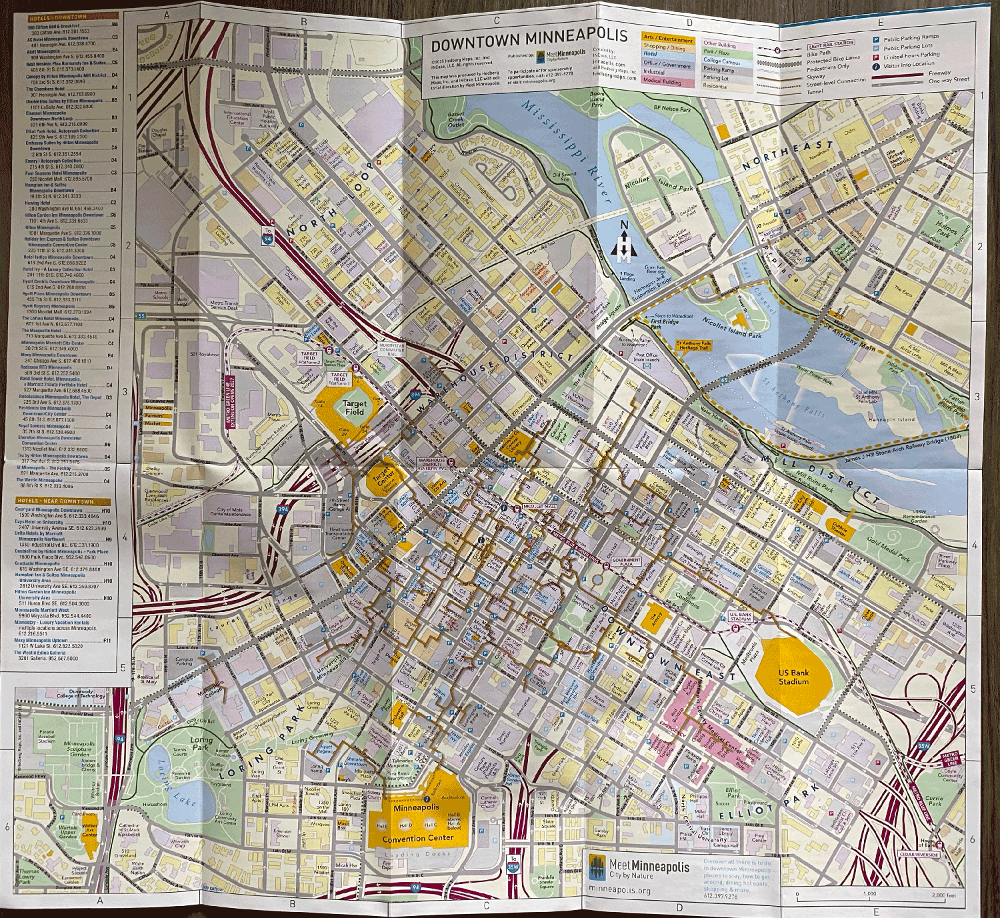
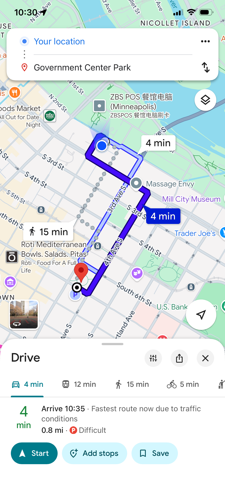
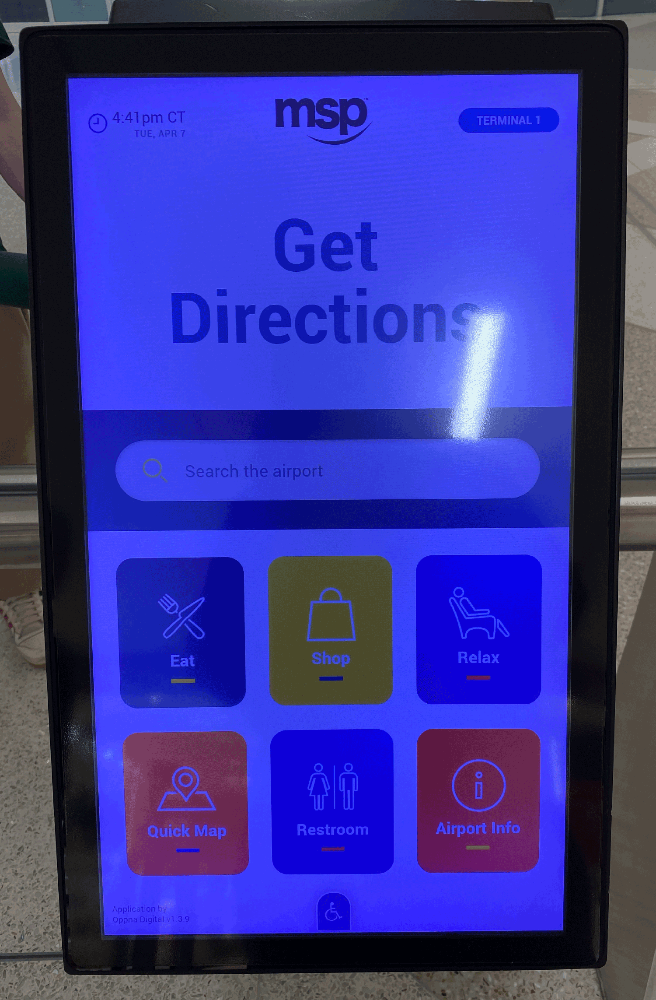
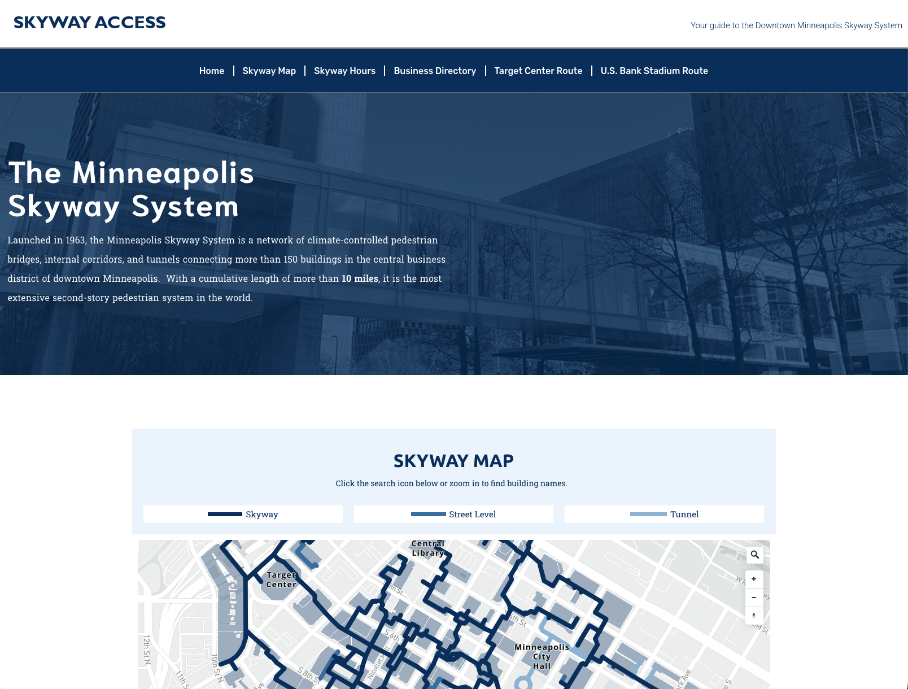
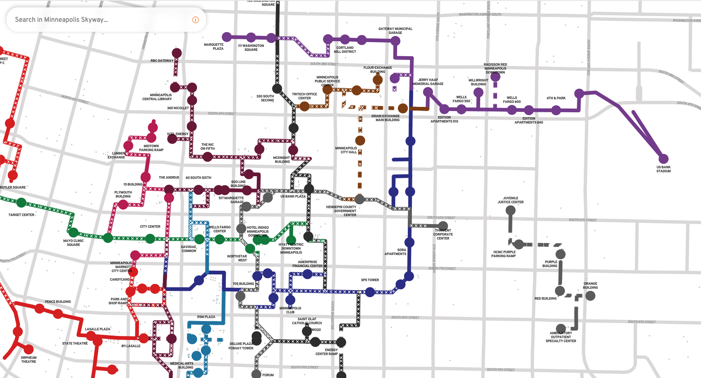
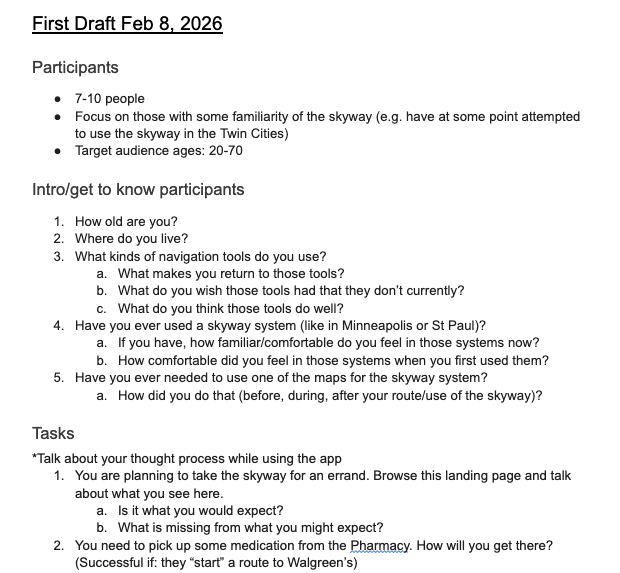
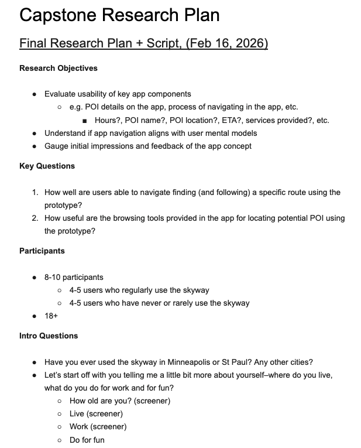
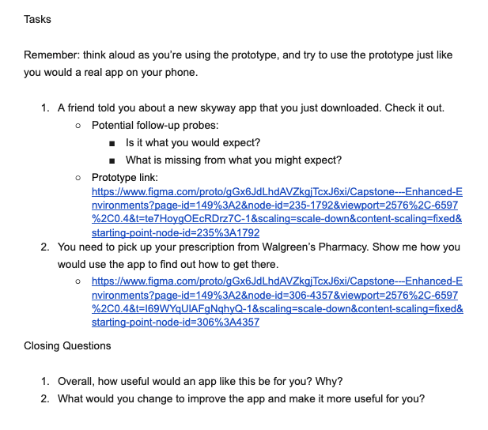
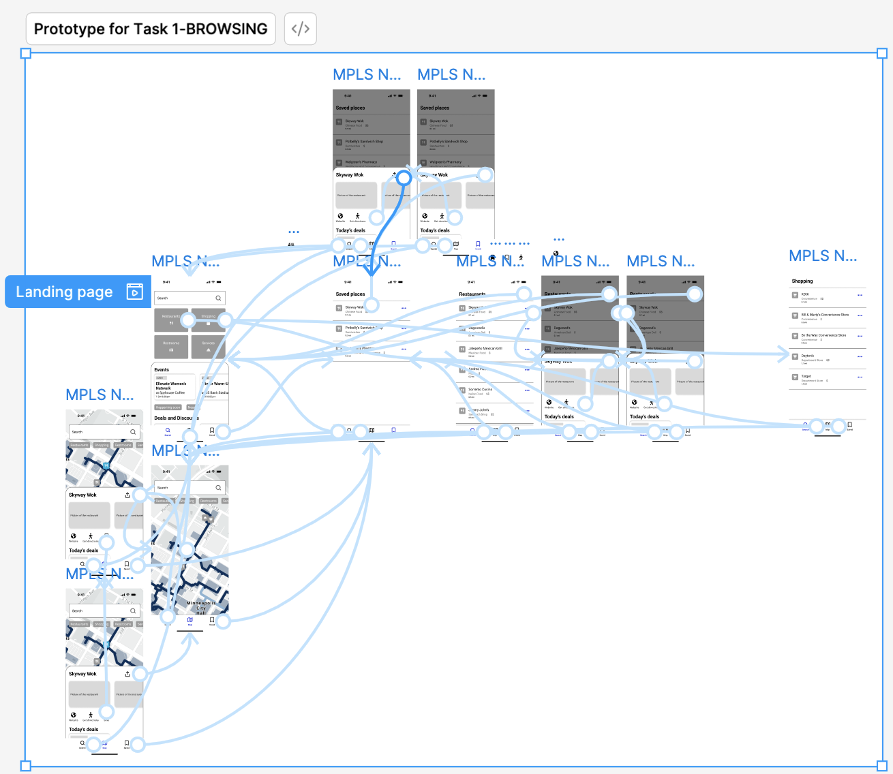
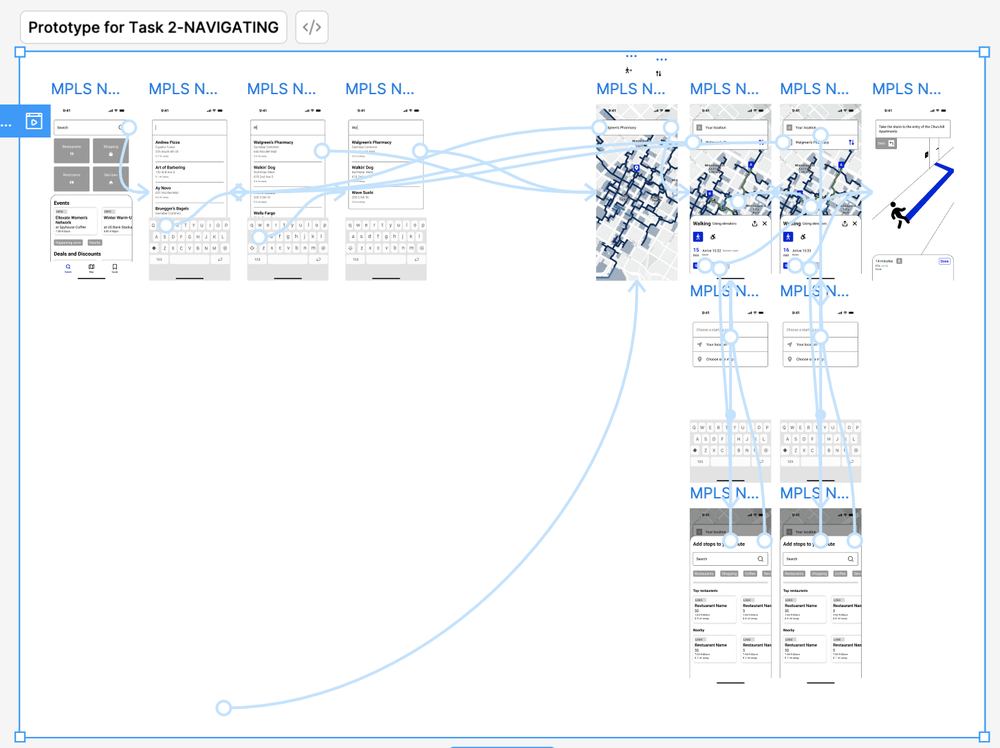

The Process:
Competitive Audit
I sought out existing navigation tools, Skyway maps, and other directional or navigation tools to see what those tools provided (or didn't provide) and help me determine what my app should include.

Figure XX. A physical map you can get at the Meet Minnapolis Visitor Center.
Physical Maps
- Pros:
- Detailed
- Keys
- Inclusive details for other transportation (e.g. the lightrail)
- Cons:
- Meet Minneapolis Visitor Center has limited hours (Tuesday-Saturday)
- More expansive/in-depth than needed for just the Skyway

Figure XX. Google Maps's navigation experience.
Google Maps
- Pros:
- Industry standard
- Interactive map
- POI details (like hours, pictures, etc.)
- Routing/navigation capabilities
- Cons:
- Company loyalty (e.g. iPhone users may not use this as often, since Apple Maps is the "automatic" navigation app)
- Cannot navigate levels
Figure XX. Apple Maps's navigation experience.
Apple Maps
- Pros:
- Interactive map
- POI details (like hours, pictures, etc.)
- Routing/navigation capabilities
- Remembers commonly frequented locations for easy (re)navigation
- Cons:
- Company loyalty (e.g. Android users may not use this as often, since Google Maps is the "automatic" navigation app)
- Cannot navigate levels

Figure XX. MSP's physical directory interface.
Physical directory tools at the Mall of America, Minneapolis-St. Paul Airport (MSP), etc.
- Pros:
- Browsable
- Maps, lists, and routing
- Able to navigate between levels
- MSP's map is also available online
- Cons:
- Requires a physical device (Mall of America) to navigate between levels

Figure XX. Skyway Access's landing page.
Skywayaccess.com
- Pros:
- Skyway map reflects the different levels (and has a key)
- Digital, so it's accessible on-the-fly (when you realize you need it)
- Can search for locations/businesses
- Up-to-date data on "extended hours" events (basically when US Bank Arena or Target Center agree to keep a series of footbridges open because of events like concerts or games)
- Cons:
- Map is static/not reflective of user's position
- Site's UX is inconsistent (US Bank's "events" that result in extended hours display differently than Target Center's)
- No pagination to indicate there are more buildings to search for than the 3 on the landing page
- Building/POI listings are separated from the map

Figure XX. Skyway.run landing page.
Skyway.run
- Pros:
- Digital, so it's accessible on-the-fly (when you realize you need it)
- Can search for locations/businesses
- Locations are associated with buildings (via the data/search results, and also the map relocating based on search info)
- Can ask for directions
- Cons:
- Easier to navigate on a desktop/large screen (fine details, small font)
- No key explaining the different line styles (solid, dash, etc.)
- Some building/POI data incomplete (I assume it's just gone a bit stale), e.g. "Part Of: No Name" or "amenity:fast_food"
- Directions must be manually progressed (click back/next to see the steps)
Sketching a Skyway Mobile App
My main goals for this app were to empower users to:
- Navigate the Skyway, and
- Engage with local businesses and community
To get started, I sketched a few options for a Skyway mobile app.

Figure XX. Sketches of potential mobile app, inspired by Google Maps's user flow.

Figure XX. Sketches of potential mobile app, inspired by physical directories (like Mall of America and Minnaepolis-St.Paul's airport) user flow.
Research Planning
I've got more experience with UX Design than research, so I drafted a Research Plan and reached out to Brittany Schiesel, who I used to work with. She is now a Director of UX Research at Blink UX.
I knew I wanted to interview users, and probably needed some folks that weren't familiar with the Skyway, as well as some who had familiarity or comfort using it.
And I knew I wanted to get feedback on what kinds of navigation apps they preferred, their overall comfortability with the Skyway (and why), and feedback on the concept of this Skyway navigation mobile app, as well as their opinion on browsing the app and get directions in the app.

Figure XX. Screenshot of the first draft of my research plan.
I wrote a research plan (to the best of my knowledge and skill) and Brittany reviewed it and gave me super helpful feedback, including:
- Identify (and document) my Research Objective(s) and Key Question(s). Use these to identify the questions and tasks you need in your research, and during analysis (to draw conclusions and make recommendations).
- Interview 4-5 people in each "audience" you are interested in. So since I wanted to hear from folks that were unfamiliar and familiar with the Skyway, I should interview a minimum of 8 people, 4 from each group. Ideally 5 from each group.
- Ask open-ended questions at the end of tasks, or the interview, so that user's can share any feedback you weren't probing for.

Figure XX. Some of Britt's comments/feedback on my research plan.
After another round of updates from me and feedback from Britt, I finalized my reseach Research Plan.

Figure XX. A snapshot of my final Research Plan.

Figure XX. A snapshot of the tasks that users would be asked during research.
Building A Prototype
Once I finalized my research plan, and specifically the script, it identified exactly what I needed to mock-up and build into a clickable prototype based on the tasks outlined in the script.
I used Figma to make my prototypes, and to keep the work and interactions from being "too involved" or having a lot of duplicates or versions of the same pages, I created two separate prototypes–one for each research task:
- Browsing the app
- Starting a route and going through the navigation steps

Figure XX. An image of the Figma prototype for 'browsing'.

Figure XX. An image of the Figma prototype for 'routing/navigation'.
But I was getting stuck on the navigation portion for a few reasons:
- I was so intent on following Google Maps's "standard" of experience, that once I got to the actual steps/instructions I was determined to illustrate each step
- I wasn't sure how best to display the directions:
- Written directions at the top of the page?
- "Hints" at next steps? (And if I did this, what kind of iconography would make sense, since these are hallways and atriums inside, and not necessarily clear "left turns" and "right turns"?
- A blue arrow along their "route"?
- The steps to get from The Crossings (an apartment on the Skywyay) to Walgreen's (a pharmacy on the Skyway) were at least 25 steps, and illustrating all of that would take more time than I had before my first user interview

Figure XX. Each of the 25 steps needed in the route/navigation.

Figure XX. Each of the 25 steps needed in the route/navigation.
In order to get my prototype working in the time I had left, I needed a quicker solution than illustrating 25 steps of the route (and 25 different interiors) "well-enough" that participants would recognize the intention of the experience for the research.
With time running down to my first interview, I really only had about 4-8 hours to deliver every step in my prototype. And I simply could not draw each of the 25 steps well enough, and digitize them, mainly because.... I'd need pictures of each step because I didn't know what each step looked like by heart anyway.
And then I realized: pictures! Of each step!
I'm not a photographer, but I do have an iPhone, and I could walk the route, and use those images for my prototype. Users would hopefully recognize they were "real" images, and I'd still be able to get feedback on what kind of imagery they expected (e.g. illustrations like Google Maps has, or this more "street-level" display)!

Figure XX. ******

Figure XX. *************.
I kept all of the elements: written directions, the images of the route, and an arrow drawing your footpath, so that I could get feedback on all of them from users.

Figure XX. An overview of the final prototype for task 2: route navigation, showing all of the steps needed to get through the entire route.
Figma Prototype Links:
User Research
Over the course of a week in February 2026, I completed 9 in-person interviews.
There were 5 users that had at one point been frequent users (what I refer to as "Experts") of the Skyway, and 4 that were infrequent users ("Novices") of the Skyway. Note: users were also asked to rate their expertise on a scale of 1 through 5.
All participants brought their personal mobile device and I texted the prototype links to them after I introduced each task.
I documented my notes in a Google Spreadsheet, including when I made prototype changes due to design/figma usability issues (that were no fault of my participants!) so that I could recall during analysis what functionality different users were seeing (or not seeing).

Figure XX. A screenshot of some of my research notes, including the prototype adjustments I made (highlighted in yellow.)
Research Findings
There is an audience for a Skyway navigation mobile app, even for Skyway “Experts.”
7/9 users successfully started their route.
Every participant had a strong, positive, verbal reaction once they started the route/navigation (with "real" photos of the route.)
No one abandoned the route even though it was more than 25 steps.
There was confusion about "where" users were on the map (at least 2 participants asked direct questions about the iconography on the map prior to starting the route.)
When tasked to start a route, users (especially “Experts”) found the category landing page cumbersome–“Experts” wanted to open the app directly to a map.
The "Events/Deals" did not resonate with participants (and none of the participants live Downtown).
For additional details and quotes, you can also check out this "one-page" report of my research findings.
Recommendations
Adjust the app so that:
- Have users land directly on the map (and not a category page).
- Reduce the steps it takes users to start their route.
- Use visuals and iconography that align with other navigation apps/patterns.
- Show various POI based on how closely the user is zoomed.
- Reconsider how "Deals/Events" are presented/shared
- Utilize category icons inside the pins to help indicate what "type" of POI are displaying.
- Consider renaming "Services" category, or breaking it into more specific categories.
Next: Additional research opportunities:
- Naming the categories/grouping of the different Skyway POI and businesses.
- Community-building opportunities and presentation (with residents of Downtown Minneapolis, or perhaps people that work downtown more than 3 days a week.)